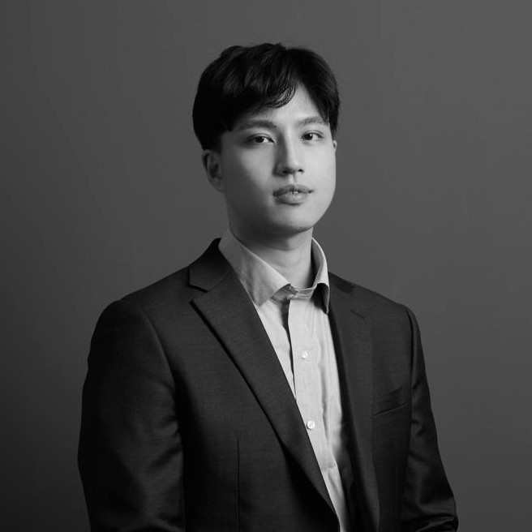
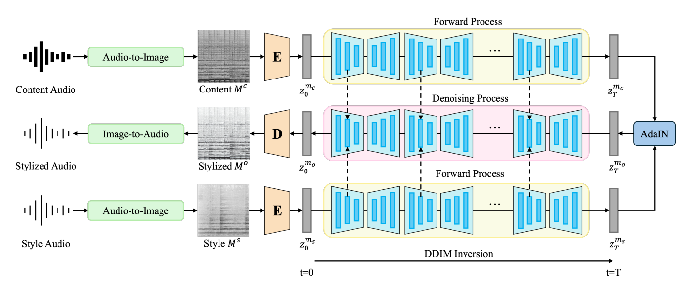
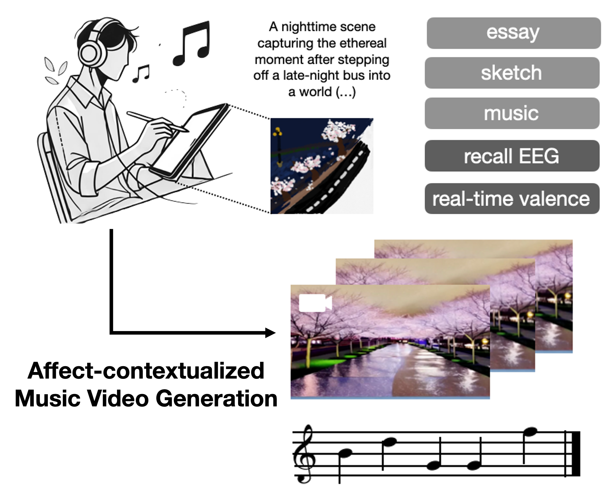
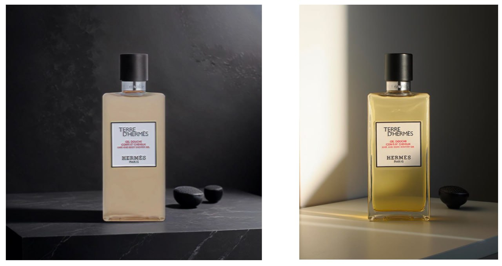
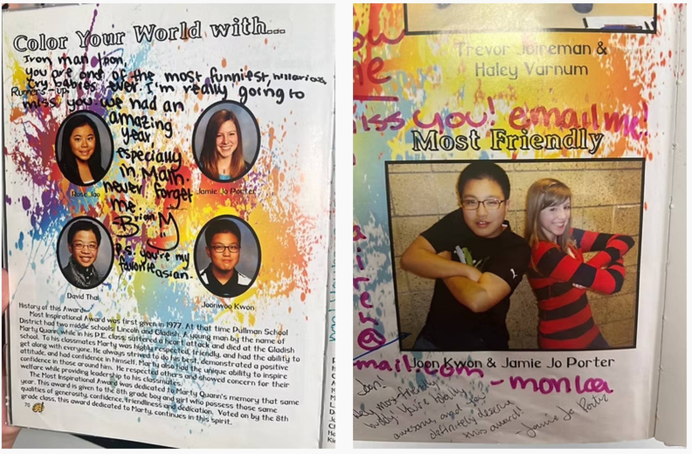

|

Joonwoo Kwon
Ph.D. student in Computer Science and Engineering (CSE)
Michigan State University (MSU)
Email /
LinkedIn /
CV /
Scholar /
Github
Good day! I am a first-year Ph.D. student in Computer Science at Michigan State University, where I'm fortunate to be advised by Prof. Zijun Cui.
Prior to this, I earned my B.S. in Electronic and Electrical Engineering (SKKU) and my M.S. in Bioengineering (SNU) in Korea.
|

|
Research Statement
My research focuses on computer vision and generative modeling, especially physics-informed deep learning.
I'm interested in how physical principles can enhance multimodal reasoning, support more grounded 3D human modeling,
and enable physics-based generation.
Previously, I had the privilege of being advised by Prof. Jiook Cha at Seoul National University,
as well as Prof. Shinjae Yoo and Prof. Yuewei Lin
at Brookhaven National Laboratory (BNL). Much of my earlier work lay at the intersection of neuroscience and deep learning, often involving generative approaches.
Outside of research, I enjoy playing a wide range of sports including football🏈 and occasionally capturing moments through photography📸.
|
Exciting News
🚀 (Aug. 2025) Our paper, Revisiting Your Memory, is accepted for the Oral Paper at ACM Multimedia 2025 - CogMAEC Workshop.
🚀 (Apr. 2025) I'll start my Ph.D. in MSU CS, beginning Fall 2025.
🚀 (Oct. 2024) Our team won the Grand Prize at the AI & Art Hackathon and presented the work at the ART DIFFUSION, SNU MoA.
|
|

|
A Training-Free Approach for Music Style Transfer with Latent Diffusion Models
Sooyoung Kim*, Joonwoo Kwon*, Heehwan Wang*, Shinjae Yoo, Yuewei Lin and Jiook Cha
arXiv, 2025
[paper]
We developed a training-free approach for music style transfer by directly manipulating the self-attention features of pre-trained diffusion models, achieving the state-of-the-art performance both quantitatively and qualitatively.
|
|
|
Macro2Micro: Cross-modal Magnetic Resonance Imaging Synthesis Leveraging Multi-scale Brain Structures
Sooyoung Kim*, Joonwoo Kwon*, Junbeom Kwon*, Sangyoon Bae,
Shinjae Yoo, Yuewei Lin and Jiook Cha
arXiv, 2024
[paper]
We designed an image-to-image translation model based on Generative Adversarial Network for cross-modal MRI synthesis.
|
|

|
Revisiting Your Memory: Reconstruction of Affect-Contextualized Memory via EEG-guided Audiovisual Generation
Joonwoo Kwon*, Heehwan Wang*, Jinwoo Yi*, Sooyoung Kim*,
Shinjae Yoo, Yuewei Lin and Jiook Cha
ACM Multimedia (ACM MM) CogMAEC '25 (CogMAEC), Oral, 2025
AAAI 2025 Workshop on AI for Music (AI4Music), 2025
[paper]
We proposed a novel generation task, dataset, and a multimodal framework for reconstructing video with music contextualized by human affect from brain signals.
|
|
|
AesFA: An Aesthetic Feature-Aware Arbitrary Neural Style Transfer
Joonwoo Kwon*, Sooyoung Kim*, Shinjae Yoo, Yuewei Lin and Jiook Cha
AAAI 2024,
[project page][paper]
, Acceptance Rate: 23.75% (2,342/12,100)
We present AesFA, a lightweight style transfer method that captures aesthetic style through
frequency decomposition and contrastive training—without relying on pre-trained CNNs.
|
Manuscript in Preparation
|
|

|
An Instance-Adaptive Photorealistic Style Optimization for Commercial Image Harmonization
Sooyoung Kim*, Joonwoo Kwon*, Jinwook Shin, Jiook Cha and Sewoong Kim
We developed a relighting and harmonization framework that resolves lighting, texture, and color mismatches
in AI-generated commercial imagery.
|
|
|
Compositional Brain Decoding from Symbolic Representations in the Hierarchical Visual System
Sooyoung Kim*, Joonwoo Kwon*, Heehwan Wang, Junbeom Kwon, Jungwoo Seo,
Mincheol Park, Shinjae Yoo, Yuewei Lin and Jiook Cha
We propose a compositional brain decoding framework that maps fMRI signals to spatially grounded noun
phrases by disentangling semantic and spatial pathways, enabling interpretable and controllable
brain-to-image generation without ground-truth supervision.
|
|
|
A Viscosity-guided Artistic Style Optimization via Brushstroke Parameterization
Joonwoo Kwon*, Sooyoung Kim*, Seungjun Lee, Shinjae Yoo, Yuewei Lin and Jiook Cha
We designed viscosity-aware style optimization and brushstroke parameterization to emulate the physical and textural properties of oil painting and watercolor.
|
|
|
My father is a researcher in electrical engineering, and my mother is an artist. In many ways, what I pursue lies at the intersection
of their worlds. The painting on the left is one of her works.
|
|

|
I spent part of my childhood in Pullman, WA, where I completed eighth grade. I was voted "Most Friendly" and
runner-up for "Most Inspirational" in 2011. Go Spartans — miss you all.
|
|